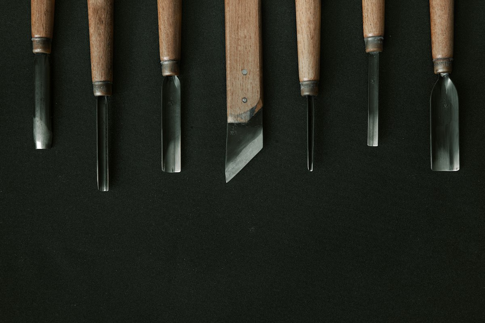
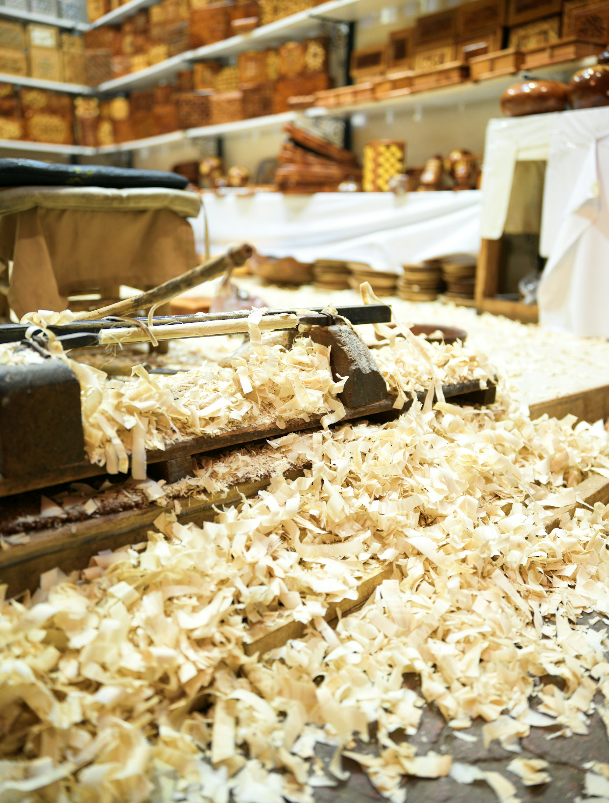
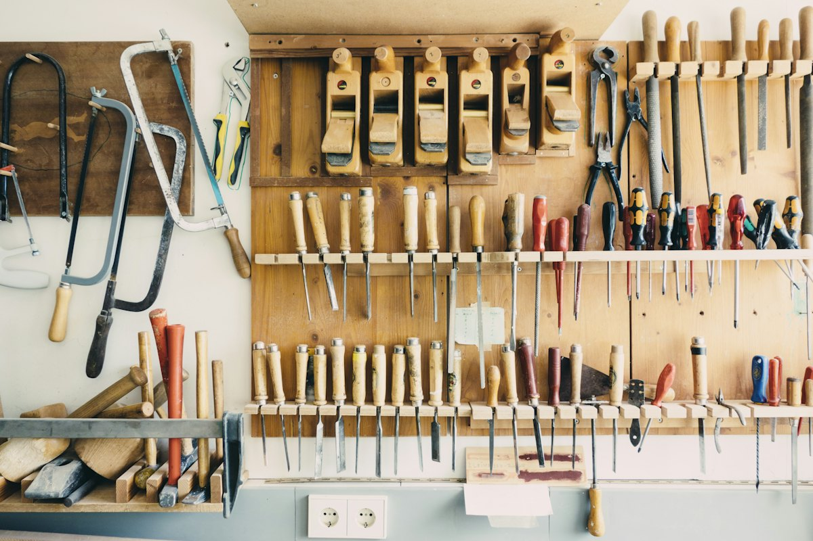
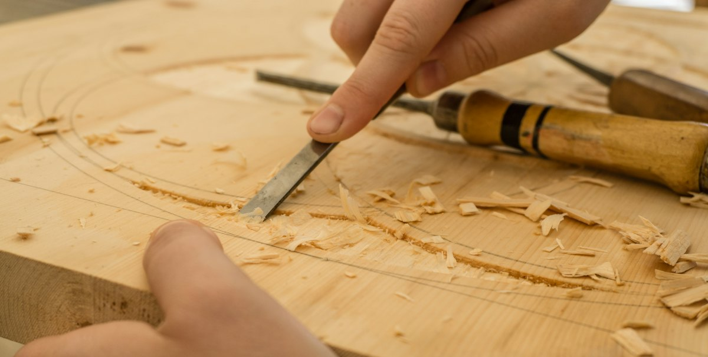
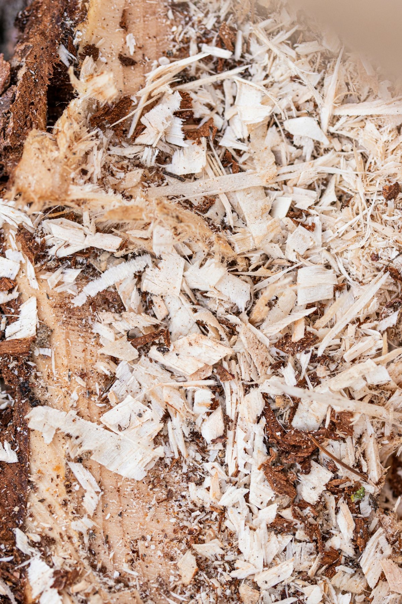

鑿（のみ）
叩き鑿、追入鑿など、職人の手に合う一本を。

大工道具・刃物 渋谷道玄坂
当初は大工道具・刃物の専門店として。今は電動工具や作業工具、金物も扱っています。他店ではなかなか手に入りにくい道具も、そろえています。
鉋（かんな）
薄く、 長く。
よく研いだ鉋なら、鉋くずは途切れずに、くるくると巻いて出てきます。
0cm
板の上で、指やマウスを左から右へ動かしてみてください。
3Dのイメージです
先々代（祖父）が初代千代鶴と懇意だったこともあり、当店所蔵のすばらしい道具の数々もお見せしています。店内には千代鶴の展示コーナーもあります。
当店オリジナルの帆布腰袋や、舞台で使うナグリ（舞台玄能）も販売しています。

叩き鑿、追入鑿など、職人の手に合う一本を。

名工の鉋から、毎日使う一台まで。

包丁や小刀、合砥・名倉砥も。

…
| 平日・土曜 | 8:30〜18:45 |
|---|---|
| 祝日 | 9:00〜17:45 |
| 定休日 | 日曜日・毎月第3土曜日 |
在庫や取り寄せのご相談は、お電話かメールでどうぞ。